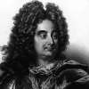

17. yy Fransası’nda her şey Kral 14. Louis’nin (1638–1715) etrafında döndüğü için kendisine “Güneş Kral” adı verilmişti. Mutlak monarşinin tipik bir temsilcisi olarak yetmiş iki yıl boyunca tahtta kaldı. Bu, Avrupa tarihinde o zamana kadar eşine rastlanmamış bir süreydi ve bugüne kadar da henüz başka hiçbir devlet adamı bu kadar uzun süre iktidarda kalmamıştır. Louis, Fransız devletini merkezileştirerek tüm gücü elinde topladı.

Kralın devlet için oynadığı önemli rol ünlü mottosundan da anlaşılabilmektedir: “L’état, c’est moi” (ben devletim).
13. Louis’nin (1601–1643) oğlu olan kral, tahta çıktığında henüz beş yaşındaydı. İktidarının ilk sekiz yılında ülkeyi kral naibi olarak annesi Kraliçe Anne (1601–1666) yönetti. Louis, yirmi üç yaşına geldiğinde krallığın kontrolünü tamamen kendi ellerine aldı.
14. Louis hem Fransız asillerinin hem de kendi bakanlarının gücünü kısıtladı. Anne ve babasının ülke yönetiminde önemli sorumluluklar verdiği Kardinal Mazarin (1602–1661) ölünce ülke yönetimini tamamıyla kendi üstüne aldı. Ünlü Versay Sarayı’nı inşa ettirdi. Paris’in hemen dışındaki bu anıtsal yapı, hem Fransa’nın uluslararası arenada büyüyen gücünü hem de gelişmekte olan merkezi hükümeti temsil ediyordu.
Louis pek çok Avrupa savaşında yer alıp zaferler kazandı. 1678 yılında Hollanda’yı ve onun müttefiklerini mağlup etti. 1684 yılında Alsace’ı Kutsal Roma İmparatorluğu’ndan aldı. Bu savaşlar sonucunda Fransa, Avrupa’nın en büyük askeri gücü haline geldi. Ne var ki İspanya’daki Halefler Savaşı (1701-1714) bir duraklamaya neden oldu. Bu savaş Fransa ve İspanya’nın birleşerek kıtasal bir süper güç haline gelmelerine engel oldu.
Güneş Kral’ın dönemi Fransa’da sanatsal ve kültürel açıdan da önemli bir gelişme dönemi oldu. Louvre Müzesi’ni büyüttü. Ayrıca emekli askerler için Paris’te büyük bir askeri kompleks olan “Hôtel des Invalides”i inşa ettirdi.
Louis yetmiş yedi yaşında öldüğünde hem oğlundan hem de torunundan daha uzun süre yaşamıştı. Yerine oğlunun torunu 15. Louis (1710–1774) geçti.
Ek Bilgiler
1- Louis, Protestanlar’a ibadet özgürlüğü getiren Nantes buyruğunu 1685 yılında geri çekti. 1789 yılındaki Fransız Devrimi’ne kadar Fransız Yahudileri ve Protestanlar tam vatandaş olarak kabul edilmediler.
2- Louis, 1660 yılında María Theresa (1638–1683) adında bir İspanyol prensesi ile evlendi. Üç çocukları oldu. Kraliçenin ölümünün ardından zaten uzun zamandır metresi olan Françoise d’Aubigné Scarron (1635–1719) ile gizlice evlendi.
3- 1682 yılında bir Fransız kolonisi olarak kurulan Louisiana Eyaleti adını kraldan almaktadır.